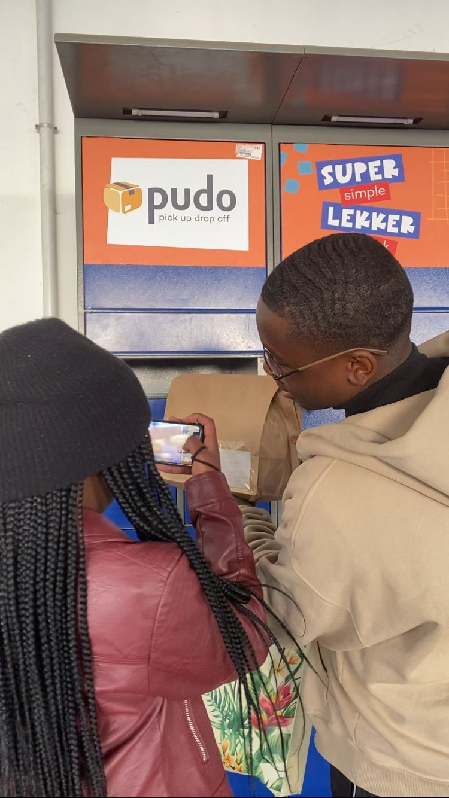
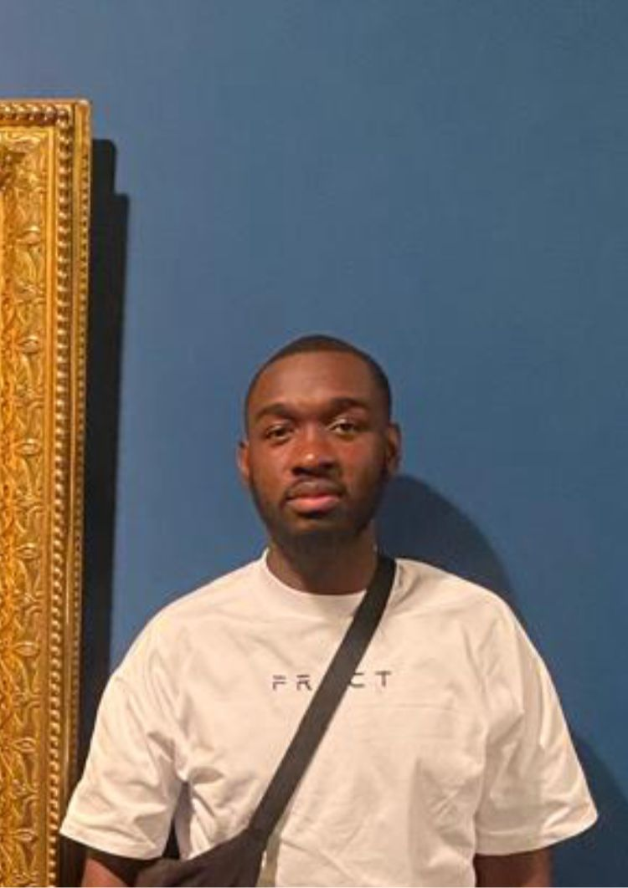
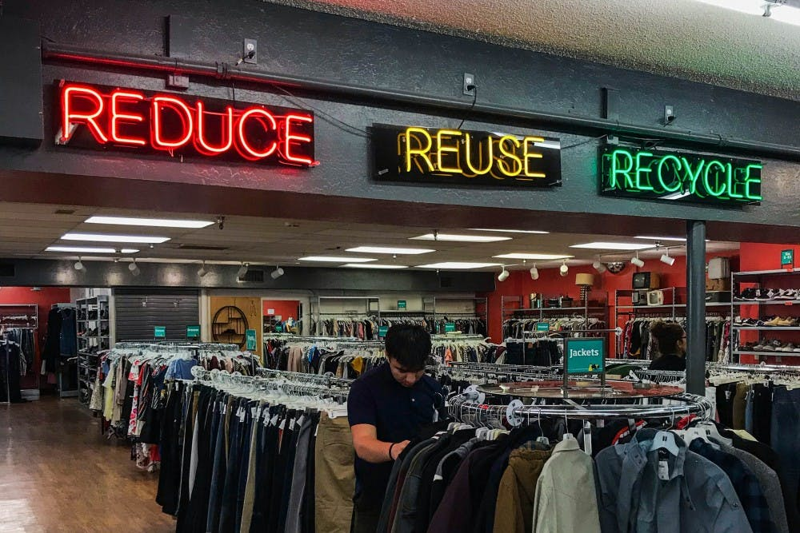

What are we?
Teray Studios is a sibling led thrift brand born from a shared passion for fashion.
What started as a simple idea has evolved into a movement that combines creativity, sustainability, and affordability.
We believe that every piece of clothing carries a story worth continuing.
By hand selecting quality, timeless items, we give pre-loved fashion a fresh chance to shine. At Teray Studios, we’re not only offering clothes, we’re shaping a lifestyle where confidence and sustainability go hand in hand.
We hand-select bold,timeless pieces that give you confidence while helping the planet.

Mission
Our mission at Teray Studios is to inspire confidence through unique, affordable fashion while actively reducing textile waste by promoting sustainable shopping habits. We are committed to building a community that values creativity, individuality, and eco-conscious living.
By modernizing the thrift experience, we aim to make secondhand fashion accessible, exciting, and impactful for the next generation.Mission Statement
Teraystudios wants to make secondhand fashion the first choice for young South Africans. We aim to provide bold, timeless, and affordable pieces that boost confidence while reducing the harmful effects of fast fashion.

Vision
To establish ourselves as South Africa’s go-to thrift brand, empowering individuals to embrace self-expression through sustainable and stylish fashion.Teray Studios should be in a positioned as South Africa’s leading thrift movement, offering students, young professionals, and vintage lovers access to stylish and eco-conscious clothing at affordable prices.

Meet our members
Daniel

the stye guru who can thrift a R20 shirt, making it look store bought.
Teresa

The behind the scenes fixer who hates being in photos but always makes sure that you've got yours on time.
Raimundo
He finds the jacket no else notices (Basically has *eyes* for gems)
Why thrifting?

- Fashion shouldn’t cost the earth
- Quality over quantity
- Your style deserves originality
Here at teraystudios we strongly believe in this Sustainability Tip:
Thrifting keeps clothing out of landfills and reduces demand for fast fashion. Every time you thrift,
you're voting for the planet.
A study by planet calls How Thrifting Can Help Us Save the Planet
Did you know that clothing production accounts for 20 to 35% of microplastic flows into the ocean and outweighs the carbon footprint of international flights and shopping combined? Unfortunately, we seem to underestimate the environmental impact of this industry. At the same time, the rate of manufacturing will continue to grow. Since the 1980s, fashion behaviour has leaned toward increased consumption. People used to buy few things with a long shelf life.
Now, under the influence of short-term trends, people buy lots of new clothes that they are likely to discard either because the items become worn out or they are no longer trendy.